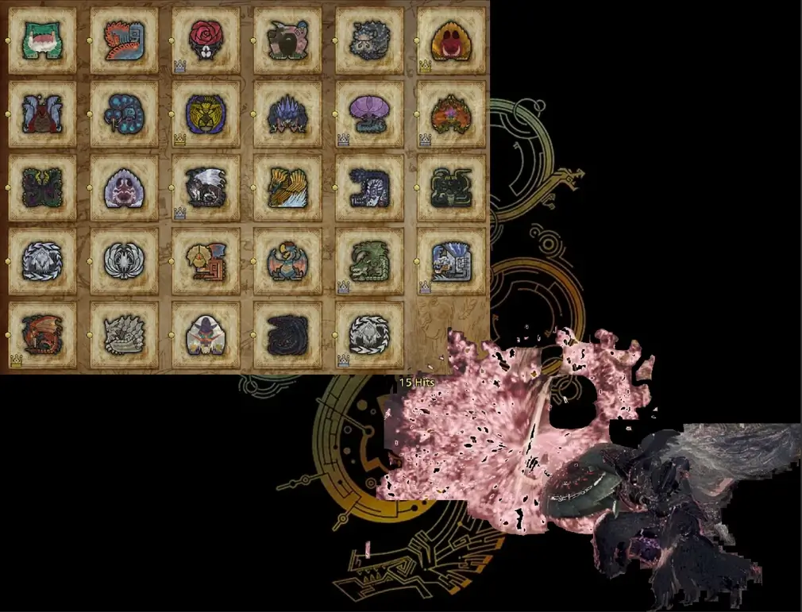
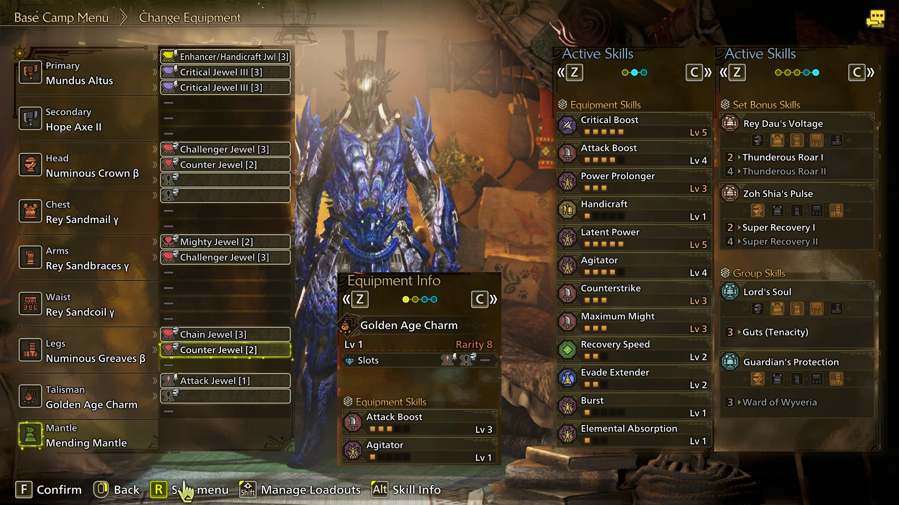
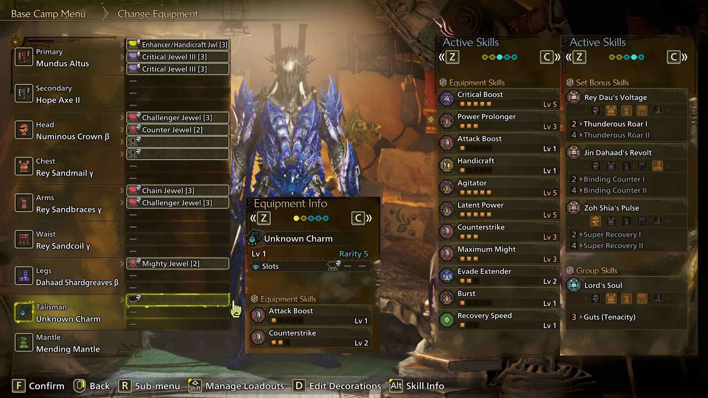
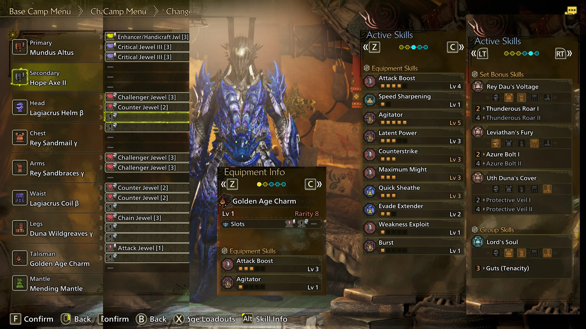
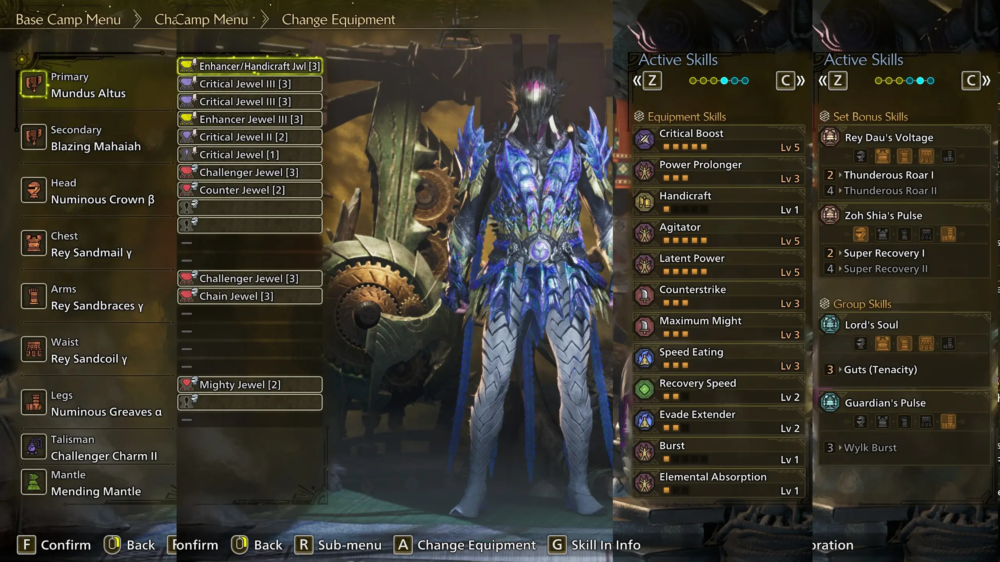
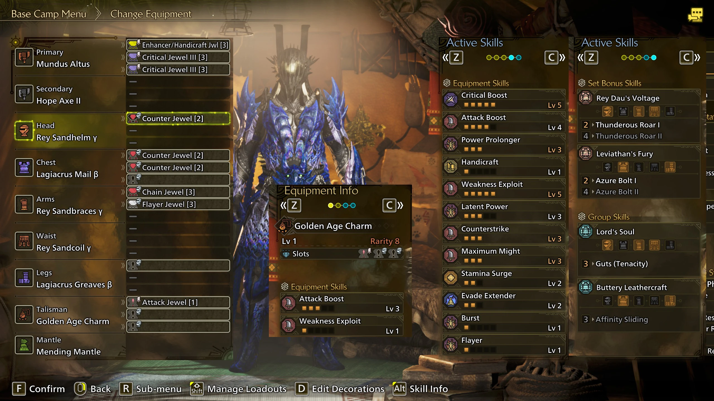

This guide was written by Sasch, Feedback is very welcome either via DMs or in the Monster Hunter Gathering Hub’s Switch Axe Channel, aswell as in our discord.
All Sets listed in the following Sections generally assume players to have general knowledge on moveset options and knowing Swaxe's kit and general matchup knowledge, aswell as having reached endgame and general access to the higher tier decoration quests.
| Importance | Skill, Level, (Abbreviation) | Notes |
|---|---|---|
| 1 | Counterstrike 3 | Counter Strike now procs on Hyper Armor and Counter, meaning essentially a free 25 Raw for 45 Seconds at level 3. |
| 1 | Maximum Might 3 | All these Skills share two crucial things in common: They give affinity and are on Armor. Every single important move in Swaxes kit can Crit. |
| 1 | Agitator OR WexWeakness Exploit 5 | |
| 1 | 2 Piece Gore + Antivirus 3 OR Latent Power + 2 Piece Rey | |
| 2 | Burst 1 | Grants 10 Raw at Stage 2. Very efficient Skill for that, the Element does not matter to us. |
Fig. 2.1A - Offensive Armor Skill “Priority” | ||
The table is called “Priority”, because there is no actual priority. You will fit all these skills together, most other skills are either immensely situational or overly nerfed, to the point of being not worthwhile to use.
| Importance | Skill, Level, (Abbreviation) | Notes |
|---|---|---|
| 1 | Power Prolonger 3 | Significantly improves Amp uptime, resulting in more Full Release Slashes. |
| 1 | Critical Boost | Undisputedly the best Skill in the Game. Again. |
| 2 | Handicraft | Only useful if rolled as a secondary skill on Power Prolonger 3 Decoration. |
| 3 | Rapid Morph | It’s way, way weaker than it sounds and does not even remotely live up to how good it was in Rise/Sunbreak, but enables a morph based playstyle nonetheless. Usable for “Fun, Alternative” Sets, but has no place in the meta unfortunately. |
| -9999 | Focus | It's really bad, Source (youtube). |
2.1B - Weapon Skill Priority Table | ||
- Food Skills:
- First Slot: Meat as a base for food grants +2 Raw.
- Second Slot: Caprice Meal (Hi) (Airy Egg) gives +15 Raw in random intervals during its Duration, which last for 10 seconds each. Alternatively, Tumbler Meal (Mud and Turbid Shrimp) grant additional Iframes on dodges.
- Lastly, Moxie Meal (Specialty/Slid Garlic) can prevent one cart.
- Third Slot depends on Set and Location.
Ultimately, there is no stand-out absolute banger meal that will make a ginormous impact, so eating whatever is available or cooked by villagers or even just Meat is good enough.
Out of quest-set:
Items consumed in the Hub/”Safe Area” persist into quests. Equipping a set with Mushroomancer and Item Prolonger and then consuming buffing items will increase their duration and make farming for them significantly faster, due to only needing mushrooms and seeds. Whether that is something you want to deal with is up to you.
Cat:
The current consensus is to either give it a Para Weapon or to leave it at home. Para is the preferred status, as it does not interfere with Agitator, which is taking a more central role in this Meta again.
Cat unlocks extra abilities by doing its Side Quests, namely:
- Revive on cart with half health (once/quest)
- Spawn Vigor Wasps
- Steal materials
- Buffing Players’ Attack Stat Cats max out at level 30.
The Current meta revolves around GogArtian Weapons. This Section covers the base Artian Weapons, which upgrade into GogArtian.
The Materials to craft the good ones are obtained from HR41+ Tempered Investigations.
The Three materials needed to craft a Switch Axe are 2x Blade and 1x Device.
To craft an Artian Switch Axe, talk to Gemma and select the Forge Artian Weapon option.
Next, Select the parts:
Each part has an Element (or a Status), and either Attack or Affinity associated with it. Using two of the same Element/Status makes the resulting weapon have that Element/Status. For Switch Axe specifically, this also impacts the Phial Type the resulting Weapon will have.
Using the same Element/Status three times boosts the value a bit. It is preferred to use the same Element/Status three times for that reason.
The “Infusions” on these parts always resemble 5. Current Highest Tier Artian Weapons have a base of 190 Raw and 5% Affinity, aswell as 20 Units of White Sharpness and a Dragon Phial. They always have 3-3-3 Slots.
If you, as an example, use 2 Attack Infusions and 1 Affinity Infusion, the resulting weapon will have 190 + (2x5) Attack and 5+(1x5)% Affinity.
The results thus work like this:
| Part 1, Element, Infusion | Part 2, Element, Infusion | Part 3, Element, Infusion | Result |
|---|---|---|---|
| Blade, Fire, Attack | Blade, Water, Affinity | Device, Sleep, Attack | 200 Attack, 10% Affinity, Dragon Phial (26) |
| Blade, Dragon, Attack | Blade, Dragon, Attack | Device, Ice, Attack | 205 Attack, 5% Affinity, Element Phial, 26 Dragon Element |
| Blade, Water, Affinity | Blade, Water, Affinity | Device, Water, Affinity | 190 Attack, 20% Affinity, Element Phial, 28 Water Element |
| Blade, Paralysis, Attack | Blade, Paralysis, Affinity | Device, Paralysis, Attack | 200 Attack, 10% Affinity, Power Phial, 8 Para |
| Blade, Sleep, Attack | Blade, Poison, Attack | Device, Sleep, Affinity | 200 Attack, 10% Affinity, Power Phial, 6 Sleep |
Fig. 2.2.1A - Artian Crafting Examples | |||
Note that you cannot mix and match Parts of differing Rarity. Rarity 6 and 7 Artian weapons are strictly not worth it.
Proceeding with the currently widely applicable pick of 3x Para, the weapon is crafted with the stats from the Result tab. After crafting comes Reinforcing. This is done via the “Reinforce/Dismantle Artian Weapons” Menu option at Gemma.
Pick the Reinforce option and the Weapon you want to gamble on.
Reinforcement Materials can be obtained by trading with the secondary forge in Azuz. Trade your unneeded Monster Materials and Licenses for Oricalcite.
It takes 10 Oricalcite per roll, for a total of 5 rolls = 50 of those ores.
This is where the weapons are truly made. Each “Reinforcement” adds 1 of 4 possible rolls on the weapon.
- These are:
- +5% Affinity;
- +3 Element/Status (bloated to 30);
- +5 Raw;
- +30 Units of Sharpness.
Depending on what you are building for, you may want differing rolls. This guide generally recommends going for a total (this includes the parts used to craft the weapon) +60 Sharpness (2 rolls), and the rest into Attack, to end at at least 205-210 Attack, 80 Units of White Sharpness, Power Phial and 8(0) Para.
Gains above 210 Attack are generally not worth chasing, as they become increasingly rarer. As long as you avoid Element Boost, you’ll be fine.
Due to the RNG factor, you’re likely to end up with a trash weapon. Dismantling an Artian weapon returns the Ore used to Reinforce it back to you. You lose the Parts (2x Blade, 1x Device) used to craft it, but the Ores are one less worry you need to have.
The Current meta revolves around GogArtian Weapons.
GogArtian Weapons are upgraded from Artian Weapons.
To do so, talk to the Smithy and choose
Forge/Upgrade Artian Weapons > Upgrade to Gogma Artian.
Select any previously made Artian Weapon and pick which type of upgrade you want.
The available options are:
| Focus | Effect |
|---|---|
| Attack Focus | +10 Attack, -15 Affinity, Phial type: Power |
| Affinity Focus | -10 Attack, +10 Affinity, -10 White Sharp, Phial Type: Element |
| Element Focus | +4 Element, -5 Affinity, Phial Type: Element |
| Fig. 2.4A - GogArtian Upgrades | |
Next, choose the Reinforce Gogma Artian option from the same Forge/Upgrade menu.
You can (repeatedly) roll new bonuses on GogArtian weapons and choose to either get completely new rolls, or keeping the same types of rolls.
These rolls can be:
| I | II | III | EX | |
|---|---|---|---|---|
| Attack | 5 | 6 | 9 | 12 |
| Affinity | 5 | 6 | 8 | 10 |
| Element | 3 | 5 | N/A | 8 |
| Sharpness | 30 | N/A | N/A | 50 |
| Fig. 2.4B - New Reinforcement Bonuses | ||||
The same category can roll a maximum of 2 EX-Tier reinforcements.
That means that a roll of Attack EX, Attack EX, Attack 3, Sharpness EX, Sharpness EX is possible and legal,
but Attack EX, Attack EX, Attack EX is not.
Otherwise, the same limitations of Base Artian reinforcement rolls apply.
You'll notice a second option, called Reset Bonuses. Gog Artians can roll one Set bonus and one Group bonus each.
Reinforcement and Skill Bonuses can be re-rolled independently of each other, making the only permanent thing on GogArtian Weapons the Crafting Bonus and the upgrade Focus.
-
Unless otherwise noted, the recommended Rolls for Switch Axe are:
- 2x Sharpness EX,
- 2x Attack EX,
- 1x Affinity EX These rolls are the most flexible choices, although other notable ones exist.
For specific set-dependent rolls, see Section 4.
Ele Matchups are kind of somewhat relevant again a little bit as of TU2, come TU4 there will be a proper matchup chart again. Until then, enjoy this meme.

Open image in new tab
3.0A - We elematch now!
The following sets assume the use of Might Seed, Demon Powder, Mega Demon Drug, aswell as eating meat in any capacity, with shrimp being the recommended second ingredient.
Additionally, they assume the Power Charm, obtained by doing the Double Ajarakan Arena quest (“As Gatekeeper”) from Rex’ Questline in Suja.
As mantles now finally reset between Quests, there are three theoretical, but really only two practical options:
Evasion Mantle,
Which has some synergy with more evasion-based gameplay,
Corrupted Mantle,
Which synergizes amazingly with Rising Slash Spam, taking it to obscene levels of damage output, and
Mending Mantle,
Which applies constant healing for it's duration and is generally the recommended comfort choice unless you're using Resentment in any capacity.
Due to their short uptimes, however, the Sets below are not optimized for their use - mainly because frankly, there just aren't really other Skills to even go for. We've been at this exact loadout since TU1's Festival.
All Budget Sets perform roughly the same. The choice between optimizing for Budget Charms versus Budget Weapons was put to vote, and craftable Charms were preferred. All other sets are ordered roughly in terms of their efficency/strength.
Strictly speaking, the baseline requirement for most sets is HR100.
Due to the Talisman and Weapon upgrades, aswell as the Gogma Artian Weapon Meta, most sets will only fully come online well beyond that, depending on grinding strategy and deco/material RNG.
Every Non-Level 3 Decoration becomes target meldable at HR 100, meaning you’ll never truly be locked out of a set completely. In situations of extreme strokes of bad luck, you might have to give up 1 level of crit boost, which hurts, but has no hunt-breaking impact given how short lived monsters in Wilds seem to be.
All Budget Sets perform roughly the same. The choice between optimizing for Budget Charms versus Budget Weapons was put to vote, and craftable Charms were preferred. All other sets are ordered roughly in terms of their efficency/strength.
-

Open image in new Tab
- Exactly the Weapon pictured above,
- Rarity 8 Charm with Attack Boost 3 and either Burst 1 or Agitator 1 and 2 level 1 Armor Decoration Slots
Requirements:
Gameplan:
RISING SLASH.
Like all other "raw"non-2-Piece Fulgur Anja Max Might sets, avoid spamming rolls.
Counterstrike is juggled through Counter, Latent Power with Full Release.
This Set requires Matching Element - you will need 5 of this weapon, one for each element.
Recommended Comfort:
There exists one (1) set that drops Coalescence and finds 1-slots, but requires a rarity 8 Attack Boost 3, Max Might (or Counterstrike) 1 Antivirus 1 Charm with 2 Level 1 Armor Slots.
This Set is that slightly weaker version -- thanks kook!
Recommended Upgrades:
None. AT Jin Dahaad is unlikely to change this.
Weapon Alternatives:
None.
-

Open image in new Tab
Requirements:
- The exact weapon pictured above, one per element,
- Power Prolonger 3 Charm with a Level 2 Slot and 1 Level of either Burst, Latent Power or Agitator
Gameplan:
Triple Slash.
You will stick to elementally weak hitzones like glue. Specifically, 65/30, 50/25 and similarly element heavy hitzones are prime targets, and the only ones where this set beats The Pinnacle.
Recommended Comfort:
Getting better. There is no room for comfort. There is nothing you can drop for comfort.
Recommended Upgrades:
None. AT Jin Dahaad is unlikely to change this.
Weapon Alternatives:
None.
-

Open image in new Tab
Requirements:
- The exact weapon pictured above, one per element,
- Charm with a Level 3 Slot, and Max Might 2 OR Counterstrike 2 OR Max Might 1 and Counterstrike 1
Gameplan:
Rising Slash.
Recommended Comfort:
Stun Res 3, Shockproof, Bleed Res etc.
-

Open image in new Tab
Requirements:
- The exact weapon pictured, one for each Element,
- Rarity 8 Charm with Attack Boost 3, and either of Burst 1, Flayer 1, Latent Power 1 or Agitator 1.
Gameplan:
Rising Slash, focus on maintaining Doshagumas Bonus by offsetting regularly.
Recommended Comfort:
Stun Res, Speed Eating, Shockproof 1 for MP, Stun/Tremor… Res, Aquatic Mobility 1, Quick Sheathe, Adaptability 1…
-

Open image in new Tab
Requirements:
- The exact weapon pictured, one for each Element,
- Rarity 8 Charm with Attack Boost 3, and either of: Burst 1, Agitator 1 or Adrenaline Rush 1.
Gameplan:
Rising Slash. If you fit Adrenaline Rush, play accordingly and aim for an uptime of 30% or more.
Recommended Comfort:
Stun Res, Speed Eating, Shockproof 1 for MP, Stun/Tremor… Res, Aquatic Mobility 1, Quick Sheathe, Adaptability 1…
- The exact weapon pictured, one for each Element
 Open image in new Tab
Requirements:
Open image in new Tab
Requirements:
Gameplan:
Rising Slash. If you fit Adrenaline Rush, play accordingly and aim for an uptime of 30% or more.
Recommended Comfort:
Stun Res, Speed Eating, Shockproof 1 for MP, Stun/Tremor… Res, Aquatic Mobility 1, Quick Sheathe, Adaptability 1…
- The exact weapon pictured, one for each Element
 Open image in new Tab
Requirements:
Open image in new Tab
Requirements:
Gameplan:
Rising Slash. If you fit Adrenaline Rush, play accordingly and aim for an uptime of 30% or more.
Recommended Comfort:
Stun Res, Speed Eating, Shockproof 1 for MP, Stun/Tremor… Res, Aquatic Mobility 1, Quick Sheathe, Adaptability 1…
- The exact weapon pictured, one for each Element
 Open image in new Tab
Requirements:
Open image in new Tab
Requirements:
Gameplan:
Rising Slash. This set uses Adrenaline Rush, play accordingly and aim for an uptime of 30% or more.
Recommended Comfort:
Stun Res, Speed Eating, Shockproof 1 for MP, Stun/Tremor… Res, Aquatic Mobility 1, Quick Sheathe, Adaptability 1…
- The exact weapon pictured, one for each Element,
 Open image in new Tab
Requirements:
Open image in new Tab
Requirements:
Gameplan:
Rising Slash. If you fit Adrenaline Rush, play accordingly and aim for an uptime of 30% or more.
Recommended Comfort:
Stun Res, Speed Eating, Shockproof 1 for MP, Stun/Tremor… Res, Aquatic Mobility 1, Quick Sheathe, Adaptability 1…
Note: The following Sets are not (and probably will not be) updated for Title Update 4.
These Sets offer alternative Playstyles or are otherwise noteworthy for something they do, or don't do, while maintaining proper usability.
- Requirements:
- Artian Weapon with at least 200 Raw, aswell as 2 Sharpness Reinforcements, preferably Paralysis status,
- 2x Latent PowerThrottle, 2x AgitatorChallenger, 1x CounterstrikeCounter Armor Decorations,
- A rarity 8 Charm with either Attack Boost 3 or Critical Eye 3, and either of: Burst 1, Agitator 1 or Latent Power 1
- 1x Crit boost 3 + 1x Crit Boost 2 OR 2x Crit Boost 3 Decoration, and 1x Power Prolonger 3 Decoration
Gameplan:
This set is played as normal, meaning you Full Release as much as you can. The change kicks in once you would heal for the first time.
Instead of healing, you use the The Blackest Night option, which will raise a shield around you. The goal is to have this shield broken by monster Attacks, at which point you unleash
an attack, dealing in the realm of 800-1k damage and leaving you at 1 HP, with your entire health bar being turned into recoverable, red health.
For a short while after this, attacking things will also apply some healing on a relatively long internal-cooldown, to the point where even non-stop Full Release spamming will not amount to significant amounts of health.
You will have to freestyle and play aggressively to recover back to reasonable levels of health, and stay at those levels - ideally using as little hyper armor as possible while still maintaining Counterstrike.
From that point onward, TBNThe Blackest Night should be used on cooldown.
While weaker than the Standard set(s), this is a genuinely different playstyle, revolving around staying at just barely living amounts of Health.
Thanks to Jackscin for insisting on testing.
Recommended Comfort:
Shockproof 1 for MP, Weapon Deco: Power Prolonger 3/Handicraft 1 Decoration, Stun/Tremor… Res, Aquatic Mobility 1, Quick Sheathe, Adaptability 1…
Weapon Alternatives:
Blazing MahaiahZoh Shia has to drop 2 levels of Critical Boost, as Power Prolonger is more impactful, but can beat even a perfect Artian roll, depending on your luck with Whiteflame procs.
While technically superior on paper, it looses the 1-2 paras per hunt, which in turn means less aggressive FRSFull Release Slash spam, resulting in Lower DPS, depending on playerskill and about a dozen other factors.
- Requirements:
- Artian Weapon with at least 200 Raw, aswell as 2 Sharpness Reinforcements, preferably Paralysis status,
- 4x AgitatorChallenger, 1x BurstChain, 1x ResentmentFuror Armor Decorations,
- A charm with Attack Boost 1 and a Level 3 Slot, as well as any TWO of: Counterstrike 1, Maximum Might 1, Resentment 1.
- 1x Crit boost 3 + 1x Crit Boost 2 OR 2x Crit Boost 3 Decoration, and 1x Power Prolonger 3 Decoration
Gameplan:
This set is played as normal, meaning you Full Release as much as you can.
You aim towards healing as little as possible, and similarly using Counter as little as possible, in order to maximize uptime on having red (recoverable) HP.
This set will be strictly weaker than the Standard one in section 4, unless you hit a Resentment Uptime of 70% or above.
As the Theorycrafter, Playtester and Author of this guide, I am unable to produce that uptime - but maybe you can, and if you can, this set might be for you.
Recommended Comfort:
lol.
Due to the extremely limited set building in this game, there is no meme build yet.
You know how on Youtube and similar sites, one common clickbait is the "This changes everything..."-type post?
It's actually real this time.
TU4 buffed a bunch of moves, taking Rising Slash Loop from niche relevancy to proper go-to combo status. Artian Weapons upgraded with an Attack Focus become Power Phials, which finally gives us competetive Power Phials with an Element.
Due to the big base stat increase on the newly introduced upgrade to Artians, Element Phials have consistent winning matchups.
Gog Artian weapons can roll a Set- and a Group Bonus, amplifying the power creep of updates by a lot. This also finally pushed us out of a sidegrade meta, and gave us the first, real, measurable upgrade over previous updates, being in the realm of 25% (and sometimes more) more damage than previous TU Meta Sets.
The impactful buffs are specifically:
Sword Overhead Slash: 33 -> 40
Sword Right Rising Slash: 42 -> 58
Sword Left Rising Slash: 48 -> 62
Pushing the Rising Loop from a little bit behind FRS Loop to nearly 60 MV/s while amped, making it the de-facto playstyle of choice.
The less impactful ones are as follows:
| Move | Old MV | New MV |
|---|---|---|
| Axe Spiral Burst Slash | 30 + 41 | 39 + 50 |
| Axe Morph Slash | 33 | 40 |
| Sword Heavenward Flurry | 24 + 36 | 34 + 46 |
| Elemental Discharge/ZSD Stab | 20 | 25 |
| Elemental Discharge (Explosion): 135 -> 160 | 65 | 75 |
| Zero Sum Discharge (Explosion) | 160, elemod 0.2 | 175, elemod 1 |
| ZSD Early Explosion | 75, elemod 0.2 | 80, elemod 1 |
| Both Discharges: Ticks | elemod 0.7 | elemod 1 |
| Unbridled Slash | 70 + 3x 17 | 85 + 3x 25 |
| Sword Advancing Slash | 45 | 55 |
| Sword Downward Fade Slash | 45 | 55 |
| Sword Morph Double Slash | 30 + 50 | 50 + 60 |
| Axe Mode Focus Strike Finisher | 20 + 35 | 20 + 46 |
| Sword Mode Focus Strike Finisher | 80 | 100 |
| Fig. 7.4A - Irrelevant MV Changes | ||
The newly added Gogmazios boasts an absurd 410k Health at the upper end and coupled with multiple HP locks, is the designated grind target of this TU, and likely going forward.
Allegedly, this update also introduced some long-awaited performance upgrades.
The Author of this guide went from stable 80 FPS at maxed out Settings (no framegen) on Wilds' Release, to vaguely 60 FPS on medium settings by TU3, to now a solid 40 FPS at medium Settings.
Two Steps forward, three steps back.
TU3 added Omega and it's savage variant, from FFXIV fame. Unlike FanDeveloper Favourites Greatsword, Sword and Shield or Bugstick, we did not receive a weapon, despite FF14 having an Omega Axe.
Both Sets are interesting: The "normal" Set offers an Elemental version of Resentment for its 2-Piece bonus, and 4-Piece unlocks the TBNThe Blackest Night Action, which
does a few things at once. While using it, instead of dying, you don't (at first), your entire health bar becomes recoverable, red HP and for a short while after proccing it (getting the shield broken), a health augment-like effect is applied.
The fight itself is best described as rough. A constant barrage of explosives and area denial, coupled with a small, erratically moving optimal hitzone in the hindlegs, combined with notably lower rates for aggro generation for Swaxe come together
into an experience that's either hectic and fun, or a frustrating clusterfuck as you whiff the umpteenth back-to-back FRS.
This Updates Arch-Tempered monster is Nu Udra, the Squid.
Set-wise, it's... not fantastic. Except the chest.
Once again, we get an Upgrade on the Chestpiece, going from Agitator 2 + a bit or Latent Power 3 to Counterstrike 2 and 2 3-Slots. This provides an upgrade, but leaves us hungry for competetive Pieces for other Slots.
Hands, waist and feet, anyone?
The fight itself is a little unintuitive. Generally speaking, moves that deal chip damage when taken to the face have the capacity to outright kill the unsuspecting counter-user, virtue of hyper armor the weapon.
The big, well-telegraphed borderline one-shot moves on the other hand can safely be countered and even Full Released through with minimal chip damage taken in return, respectively.
Overall, Title Update 3 in it's completion offered yet again more sidegrades with little to no substantial changes to either the meta, Switch Axe or the game as a whole.
TU2 added Seregios and the long-awaited return of Lagiacrus. Remember Tri?
Capcom doesn't seem to, because element was really bad for Switch Axe back then, and Lagi's Swaxe is a Power Phial with a built-in pretty massive increase of element attack, in the form of Convert Thunder Resistance. Ironically, this is a blessing in disguise due to a convoluted modifier that has finally been mathed out around this time, applying exclusively to the flat increases to element Attack. Simplified: Power Phials are now better at element than Element Phials.
Tempered Seregios and Lagiacrus both do very well in highlighting the weaknesses of this our weapon, specifically how our entire kit revolves around Hyper Armor. Steve's bleed can quickly become insurmountable if not prepared for, and Lagiacrus' Discharges are multihits that can and will kill us through Hyper Armor if we don't keep our health high.
Meta-wise, neither of the pieces related to these two have any actual impact and present sidegrades at best. Seregios could have been an upgrade, but unfortunately clashes with our playstyle so much that it quickly becomes an incoherent mess to juggle all the uptime skills with it. Lagiacrus is the de-facto weapon for the Seregios, Mizutsune and Uth Duna Matchups, and has a paper-matchup against Gore Magala, if you only ever hit the head.
Additionally, TU2 Later added Arch-Tempered Uth Duna, which had a similar impact to the other two additions, namely: None. Technically speaking, on Sets that opt for Lagiacrus' Swaxe, it was even a pretty noticable downgrade due to the negative Thunder Resistance.
(Un)fortunately, the "Downward Adjustments" weren't meant for FRS, which instead got a sizable buff: the travel distance in Focus Mode was greatly increased, making it easier to land after a Focus Strike, further improved by lowering the knockback on Sword Mode's focus strike finisher while holding forward. The Morph after Spiral in the FRS Loop got +8 MV per hit for a total of 16 MV.
Bridging Slash, which is the first hit of Triple Slash, also received a buff of 10 MV, making it stronger than the first hit of double slash (which is the second hit of triple slash). The Gap between FRS and other playstyles thus widened even more, in FRS' favour.
The last big update was the fixing of the Antivirus' description. Arch-Tempered monsters are no longer on Event Rotation and remain permanently accessible, for now.
TU1 added Mizutsune and a rematch with Zoh Shia, which can now also spawn as investigation. Tempered Mizu has a situational Oneshot with an interesting conditional Weapon Skill, which is unfortunately Stuck on an Element Phial, rendering it insultingly weak. Zoh on the other hand boasts about twice as much Health as every other Monster in the game, having just about 50.000 hitpoints. It's chest piece is a new fan favourite, being an efficency monster if compared to other available armor pieces. It's weapon rivals and arguably beats even min-maxed Artians, depending on dozens of factors of course.
Phial Ticks no longer magnetize to hitzone hit, Max Might is now easier to maintain which technically is a nerf to 2p fulgur, largely removing it from the meta landscape.
Newly discovered was the ability to Lean by the repeated usage of the Azuz Greeting Gesture. This led to, eventually, players falling through the floor, certain Aerial attacks like Hammers Slide -> Spin and most prominently Sword and Shields backhop followup to proc an unfathomable amount of times - until they inevitably became one with the void. This was relatively quickly patched.
Skill descriptions remain largely made up, somehow translating 10% from japanese to 15% in most other languages and certain skills claiming they have activation conditions that they just don't. Additionally, we're happy to report that we collectively learned that there is 2 Stages to being Wet.
Arch-Tempered Rey Dau was released and brought us a new Toy: Guts. The (almost) 5% attack it provides makes it not only relevant, but also generally beat every other setbuilding archetype. Rey gamma kept its Rey Dau Setbonus intact, meaning the preferred 3-Piece variant also has longer Latent Power duration, a Skill Swaxe synergizes with very nicely, much to the dismay of many, author included.
Switch Axe had really, REALLY pathetic numbers during all three Open Beta Tests. Now, in the Open Beta Test 3 Released Game, those numbers were cranked up to 11, and then they cranked 11 up to 50.
Full release went from a doinky ~160 MV move for its damage loop to a 506 monster. Rising Slash combo is 123 MV. Absolutely absurd.
The performance has increased significantly, and the game was largely rid of any annoying actually functioning systems. Glitches and Bugs to permanently activate certain conditional Skills, like the 4 Piece Jin Dahaad set bonus, Latent power, Agitator and this game's version of Bloodlust are making any set optimization completely moot. Full Sets come with 5 points to 3-point skills, notably Ajarakan Alpha. Luckily, the Beta version of that set drops some skills in order to make room for Slots. Unfortunately, without fail, that skill is never Partbreaker. Fig. 7.BA - Set Design Competency on Full Display
There is a crazy attention to Detail in many instances, but it is evident that none of it went into making half of the new systems work. On the bright side, they’ve managed to do what many people have desperately hoped for: Element and Raw have different playstyles. Unfortunately, Element has 0 winning match ups, as every good element skill, such as Element Attack and Critical Element compete with Critical Boost, which ultimately means, it doesn’t compete with Critical Boost.
The Crit Meta is finally dead. Long live the crit meta!
- Q: Why no Rapid morph?
- A: It's a Weapon Deco. While it offers an alternative playstyle, the damage loss and added juggling of Buff States in Amp and Power Axe make it overall not worthwhile for the purposes of optimization.
- Q: Why not Focus?
- A: Because it doesn’t really do anything and competes with Crit Boost and Power Prolonger, which means it doesn't.
- Q: Why not Partbreaker, it says it increases Focus Strike damage?
- A: It does currently not increase Focus Strike damage. It does, however, increase the 30 or so damage wounds deal when they are broken, by the specified amount in the skills description.
- Q: How long does Amp last? Why is Power Prolonger 3 good?
- A: Base Amp duration is 45 seconds. Power Prolonger 3 doubles this to 90 seconds.
- Q: What does Power Axe do?
- A: Only while in Axe Mode, it grants +10 Raw.
- Q: How much does Power Charm add?
- A: Power Charm grants +6 Raw.
- Q: How to make (Gogma) Artian weapons? What’s the best one?
- A: Section 2.2.1 covers Artian weapons.
- Q: How does the Offset work? Why does it topple so inconsistently?
- A: As far we know, Offset operates on a threshold. At the start of the hunt, the threshold is really low, everytime the actual offset happens, the threshold increases. This explains why the offset effect (big shotgun sound effect) appears on your screen, but the actual topple doesn’t happen. You need to reach the threshold everytime. Note that even if you don’t get the topple, you can still follow it up with a Heavy Slam.
- Q: How does Scorcher work?
- A: Similar to how Status works. It “randomly” (likely pre-determined chance like status, i.e. 10 out of 30 hits; needs testing) procs an extra hit of pure fire damage. That proc does not scale with Attack and doesn’t care about innate weapon element, but scales with Burst, Coalescence and Fire Attack. I go over it a little bit in this video (youtube).
- Q: What does Frenzy Mantle do?
- A: While equipped, it drains health, but procs an additional hit on some combos, depending on Weapon Type. For Switch Axe, the attacks this procs on are:
Axe: Overhead Slash, Side Slash, Spiral Burst Slash, aswell as
Sword: Overhead Slash, Right Rising Slash, Left Rising Slash.
Additionally, while attacking with this mantle equipped, an invisible gauge is filled, likely based on how much MV the attacks have. Once cleared, this mantle also grants +10 Affinity aswell as +5% Raw.
- Q: How to farm nourishing extract?
- A: Double Guardian investigations drop a lot of them. - Pinky
- Q: What does Gore 4 Piece bonus do?
- A: 2P will infect you with frenzy while fighting monsters. 4P will additionally grant 10 Raw while infected, which becomes 15 Raw (total!) after clearing it.
- Q: Why does the guide not get updated faster/every game update/so slowly?
- A: Not all updates are equal. Title update 2, up until the RNG Charm Update, did nothing for Swaxe. Since comfortability of a given Set is not the focus here, and listing every possible side-grade would consist of a couple hundred Sets that all require playtesting and intensive mathing, ontop of hindering readability, it is generally not done. Rest assured that as soon as a quantifiable update to the provided Sets or Playstyles are found, it will be updated - for Switch Axe, usually within the week of the update.
- Wilds Ass, found here
- Somewhat accurate Swaxe Damage Calculator, found here - Unmaintained until Version 3.0 has been fully developed.
- Wilds database through Kiranico, found here
- Rudimentary Focus and Rapid Morph comparison, found here and here, respectively (youtube)
- Uptime Collection Sheet found here
- Uptime Submission Form, found here
- Damo's explanation on how RNG Charms work, found here
- Kat's Charm Legality and Probability Spreadsheet, found here
- Robomeche's Hitzone Tool, found here
- I would like to thank:
- The team behind the Armor Set Search, for the Armor Set Search
- Kat for bouncing ideas, testing and verifying data
- Upgreid for writing and providing the template to this guide
- Krea for testing and finding obscure but important info
- Juzzi and Ragna for early set optimizations
- Juzzi, again, for testing, verifying and networking
- dtlnor and the other miners, without whom this would’ve taken several weeks
- the Wiggler team for being good sport and company
- MHGH’s Switch Axe chat for testing, verifying and general feedback
- Kookaburra, for general help